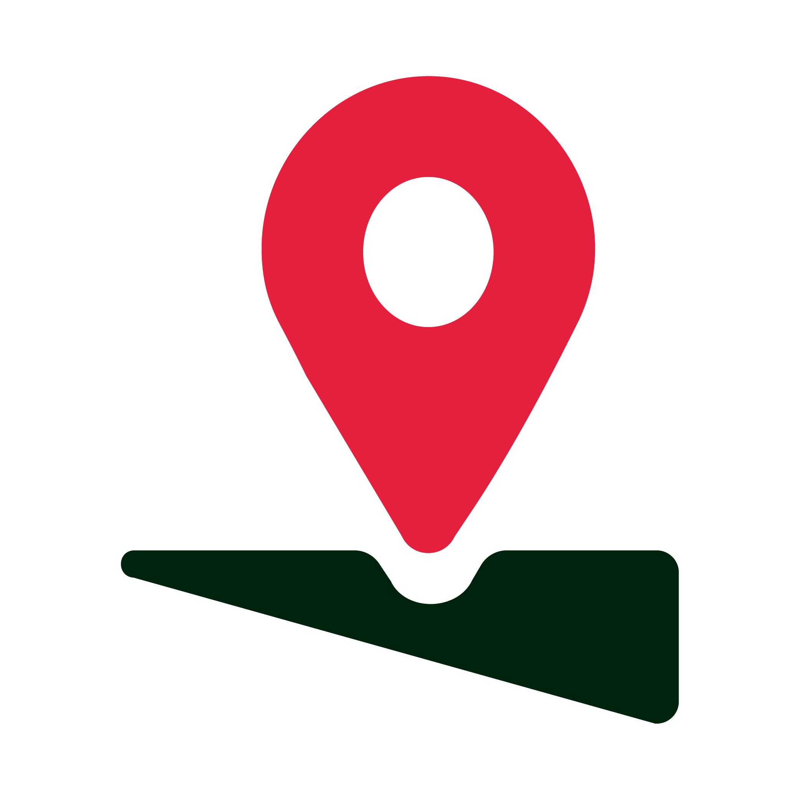

Revisión de los 5 tabs, los dos modos (normal / simple), tema claro y oscuro, y el flujo completo de viaje y encomienda. Abajo: errores ordenados por severidad y propuestas de funcionalidad.
Bloquean lectura, mienten sobre lo que se puede hacer, o dan información incorrecta.
Los tres botones del home simple («¿A dónde vas?», «Buscar por voz», WhatsApp) tienen background:#fff fijo, mientras el texto usa la tinta del tema. En oscuro queda blanco sobre blanco: contraste ~1:1, ilegible.
Arreglo: usar var(--nsurf) en lugar de blanco fijo. Es justo la combinación que más usa el público objetivo del modo simple.
La tarjeta promete «Mové el mapa y soltá el pin donde quieras», el encabezado dice «Usá + / − para acercar», y en los hechos la única forma de cambiar el punto es el botón «Otro punto», que rota entre 4 direcciones fijas. Tres mensajes distintos para una interacción que no existe.
Arreglo: paneo real con arrastre; la dirección se recalcula según el desplazamiento y el pin queda fijo al centro.
Programás para mañana 22:00, el CTA sigue diciendo «Confirmar viaje» y al tocarlo entra en «Buscando chofer cerca… tardamos menos de un minuto». El usuario cree que pidió un remís para ya.
Arreglo: CTA «Programar viaje · $X», salto directo al estado reservado, y el paso «Chofer asignado» pasa a «Reservado».
Bajada $1.200 + distancia $2.432 + tiempo $1.018 = $4.650, pero el total mostrado es $4.850. En un servicio donde «sin sorpresas en el precio» es la promesa de marca, una resta que no cierra es lo peor que puede pasar. Además el desglose vive escondido en Cuenta, no donde se decide (pantalla de opciones).
Arreglo: ítems que suman exacto y acceso «Ver cómo se calcula» desde la pantalla de confirmación.
«Cancelar pedido» y «Cancelar viaje» ejecutan al primer toque, sin diálogo, sin decir si hay costo y sin deshacer. Con el chofer ya en camino es una acción con consecuencias para dos personas.
Arreglo: hoja de confirmación con motivo y aviso de posible cargo.
No rompen el flujo, pero generan fricción, callejones sin salida o desconfianza.
Si escribís algo que no está en los 6 lugares precargados, la lista queda vacía y no hay salida ni sugerencia. Ahora aparece un estado vacío con «Elegir en el mapa».
Estaba escrito a mano en el tab y no cambiaba al leer los avisos (que además son 3). Ahora cuenta no leídos y se limpia al entrar.
«Compartir viaje», «Cargar saldo», «Medios de pago», «Cerrar sesión» y los CTA de los acordeones de Cuenta eran decorativos. Ahora cerrar sesión, cargar saldo (con movimiento real) y compartir responden.
Con el chofer en camino, ir a Billetera o Avisos hace desaparecer todo rastro del viaje. Agregamos una barra persistente sobre la navegación que vuelve al seguimiento.
Volver, modo oscuro, zoom, centrar y micrófono son botones sin etiqueta accesible; ningún control mostraba estado de foco. Se agregaron aria-label y anillo de foco.
Se entra con sólo tipear 8 dígitos, y después Cuenta muestra la insignia «TEL. VERIFICADO». Falta el paso de código SMS: es el único freno contra cuentas falsas, y en un pueblo la reputación del servicio depende de eso.
El flujo de envío es idéntico al de viaje: no pregunta quién recibe, su teléfono, qué se manda, ni quién paga. El cadete llega a una dirección sin saber a quién tocar el timbre. Ver propuesta 1.
Ordenadas por impacto sobre esfuerzo. Las tres primeras cambian el negocio, no sólo la pantalla.
Después de elegir dirección de entrega: quién recibe (nombre + teléfono), qué se manda (sobre / bolsa / caja / otro con foto opcional), si hay que pagar algo al retirar, y quién abona el envío. El cadete recibe todo eso en su pantalla y el destinatario un enlace de seguimiento por WhatsApp sin instalar nada.
Por qué: es el diferencial frente a pedir un remís por teléfono, y hoy la app no lo tiene.
Hoy el prototipo siempre encuentra chofer. En Nogoyá a las 3 de la mañana, o un domingo de lluvia, no va a pasar. La v2 suma: sin choferes disponibles con «avisame cuando haya» y teléfono de la central, demora mayor a lo estimado, chofer que cancela con reasignación automática, y barra de sin conexión. Se prueban desde la tarjeta «Modo demo» al final de Cuenta.
Por qué: el peor momento del producto hoy no está diseñado.
Un botón de seguridad en la pantalla de viaje que agrupa: compartir recorrido en vivo por WhatsApp con un enlace que expira al llegar, contactos de confianza guardados, llamada a 911 y «no es mi chofer». Reemplaza al «Compartir viaje» suelto que había antes.
Por qué: es lo primero que mira una usuaria antes de subirse de noche.
En un pueblo los recorridos se repiten: casa → trabajo → casa. Una tarjeta «Repetir: Chacabuco 1932, $5.429» arriba del buscador convierte el pedido de 4 toques en 1. Se implementó y luego se quitó a pedido: queda como propuesta para retomar más adelante.
Salió el zoom: 1.25 que agrandaba parejo lo importante y lo accesorio. Ahora hay una escala propia en variables CSS (cuerpo 18px, buscador 21px, botones de 64px, etiquetas de la barra 13px) y un botón «Llamar a la central» de tamaño real para quien no quiere tocar nada más. Para el programador: los tamaños viven en --nsbody / --nsinput / --nssub / --nsrow / --nstab.
Mostrar en el home una franja «viajes dentro del casco urbano desde $3.200» y, al elegir vehículo, marcar explícitamente «precio cerrado, no cambia por tráfico ni espera de hasta 3 min». Es la objeción número uno de quien viene de arreglar por teléfono.
Comprobante completo (número, ruta, chofer, desglose y total) al terminar el viaje y en cada pedido del historial, con «Descargar PDF» y «Enviar por WhatsApp». Para quien viaja por trabajo es lo que hace que use la app en vez de llamar, y abre la puerta a cuentas empresa.
Antes de pedir ubicación, notificaciones y micrófono, una pantalla que diga para qué sirve cada uno y qué pasa si decís que no. Hoy el buscador por voz «escucha» sin haber pedido nada.
Arreglar el desglose de precio y mostrarlo al confirmar. La confianza en el número es el producto.
Verificación por SMS antes de dejar entrar: es lo único que frena cuentas falsas.
Derivar fechas, horarios y precios de datos reales: hoy son fijos en el prototipo.